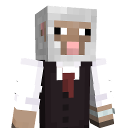
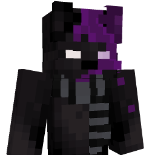
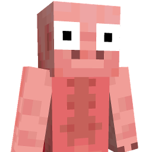
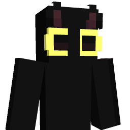

サーバー情報
サーバーアドレス:
play.carrotcraft.f5.si
参加方法:
- Minecraft Java Edition を起動します。
- 「マルチプレイヤー」を選択します。
- 「サーバーを追加」をクリックします。
- サーバー名に「CarrotCraft」、サーバーアドレスに「play.carrotcraft.f5.si」を入力します。
- 「完了」をクリックし、リストからCarrotCraftを選択して「サーバーに接続」をクリックします。
さあ、CarrotCraftの世界へ飛び込もう！
ゲームリスト

Magical sheep
様々な種類の羊を使いこなし、相手を殲滅する。

Survival Werewolf
闇夜に潜む狼を見つけ出せ！ サバイバルと心理戦が交錯する、スリル満点の人狼ゲーム！

The Three Little Pigs
知恵と勇気で家を守る子豚たちと、力で全てを破壊する狼の、6日間の攻防戦！

Bridge Rush
チーム対チームで橋を架けて敵陣とつなげるPVP建築バトルゲームです。